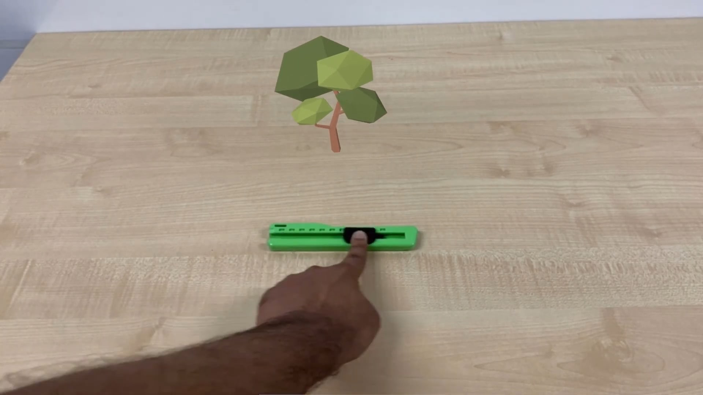
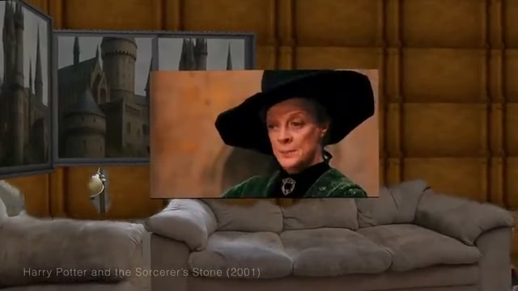

Reveal a research image to see how a hand-drawn annotation can follow a moving object.
Sketch an annotation that reacts to the object it describes.

Teach a physical object what a gesture should do.

Bring elements of a film into the space around the viewer.